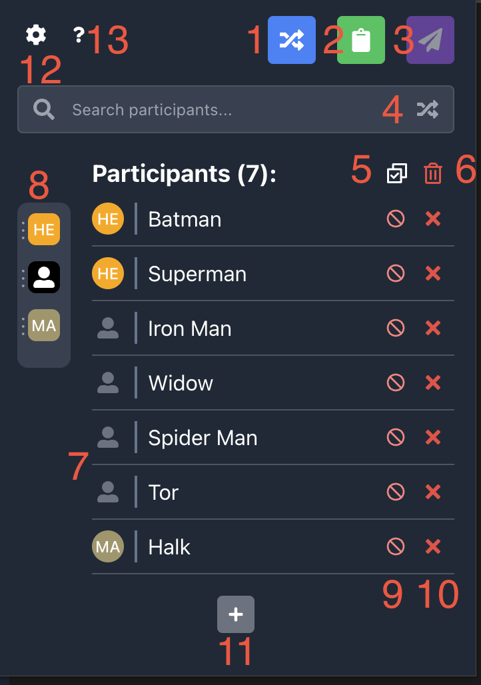
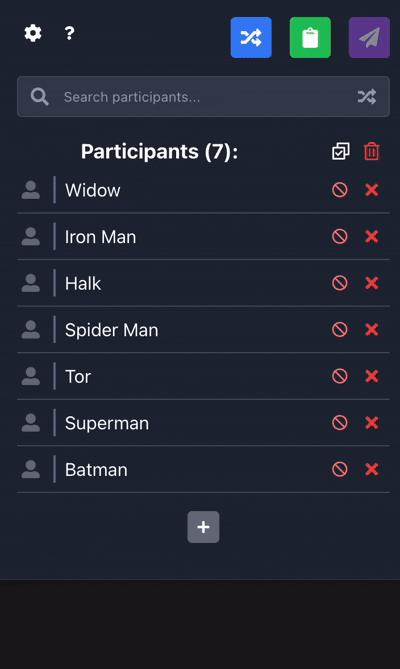

Google Meet Participants Manager
Overview
This extension helps you manage Google Meet participants with advanced features like grouping, sorting, and
quick actions.
Items in the popup will be added automatically when you open the Google Meet tab. It means it when someone
join or leave the list will be updated. You can also add items manually by pressing plus button and fill the
form.
Desctiption of elements
- Shuffle the list - it will be shuffled withing group if more than one group defined
- Copy the list to buffer
- Send the list to the Google meet chat (active only when google meet tab is opened)
- Search input and shuffle button that gives random item from the list
- Select/Deselect all items. Selecting means will it be included in the list for copying or sending to the
chat
- Removing all items
- Select group icon
- Group list - each item is draggable and can be moved in any order - items in the list will be in the same
order
- Select/Deselect each item
- Removing item icon
- Button to open form for adding new items - form can be filled multiline each line will be a separate
item
- Settings page - where you can edit groups or list texts
- Help page (current page)

Gouping and randomizing by groups demo:
